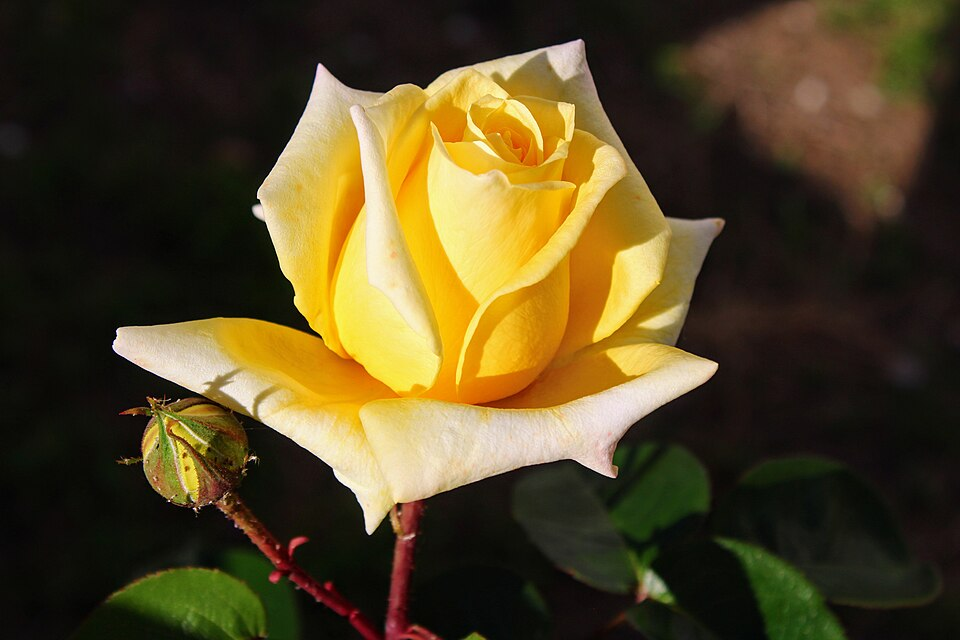
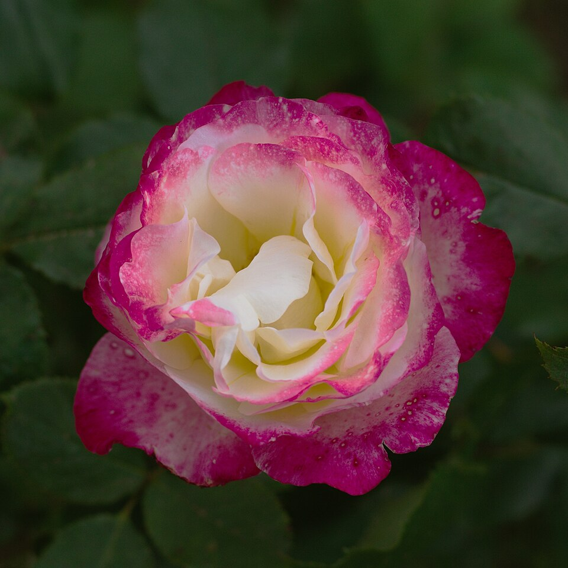
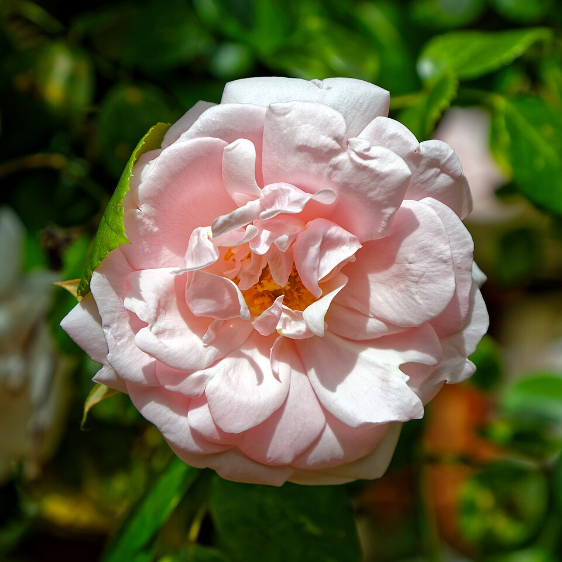
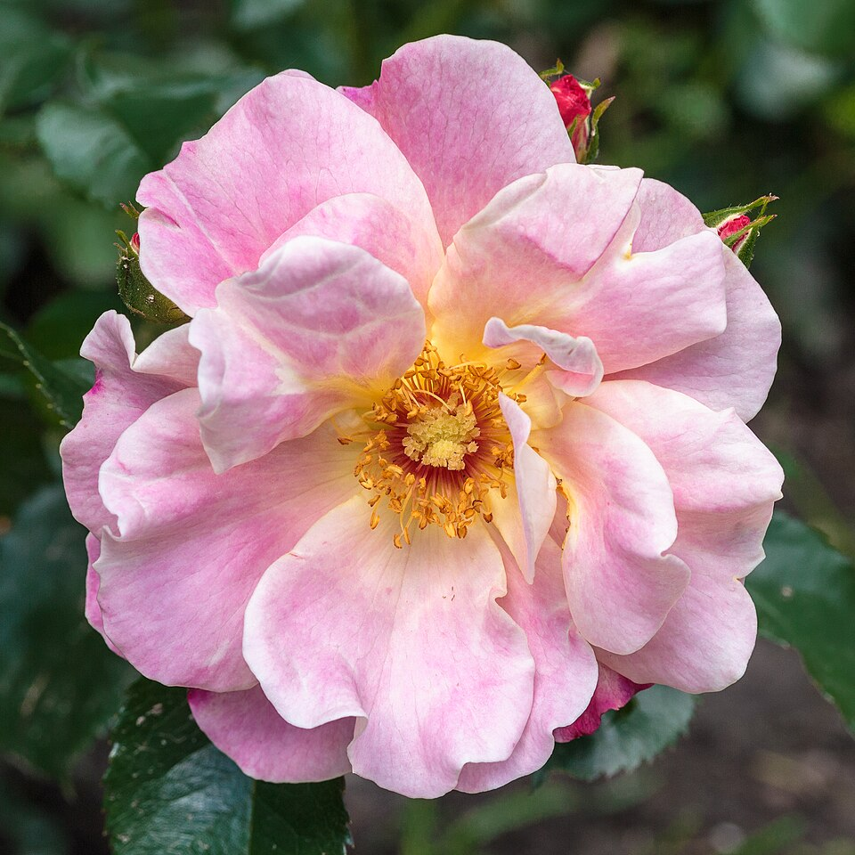

A flower of love, beauty and grace
In morning light a rose awakes,
With dewdrops trembling on its face,
Each crimson fold a promise makes
Of quiet love and gentle grace.
It does not ask the sun to stay,
Nor begs the wind to pass it by;
It simply blooms from day to day
Beneath the wide and patient sky.
Though thorns may guard its tender heart,
Its fragrance travels far and free,
A reminder, soft yet smart:
True beauty grows with bravery.
So when your days feel dim and grey,
Remember how the roses do;
They bloom, then fade, then find their way
Back into spring, and so will you.




Red rose with black background by Laitche, CC BY-SA 4.0 · Rose flower at the Lalbagh garden by Rameshng, CC BY 3.0 · Rose flower with dew by Vijai Kumar K, CC BY-SA 4.0 · Yellow rose by Kızıl, CC BY-SA 4.0 · Rose Double Delight by Alexey V. Kurochkin, CC BY-SA 4.0 · Pink climbing rose, Boreham by Acabashi, CC BY-SA 4.0 · Rosa 'Exotic Sunset' by Dominicus Johannes Bergsma, CC BY-SA 4.0
Licenses: CC BY-SA 4.0, CC BY 3.0. Photos resized to 960px.


.jpg){kind=link}

.jpg){kind=link}